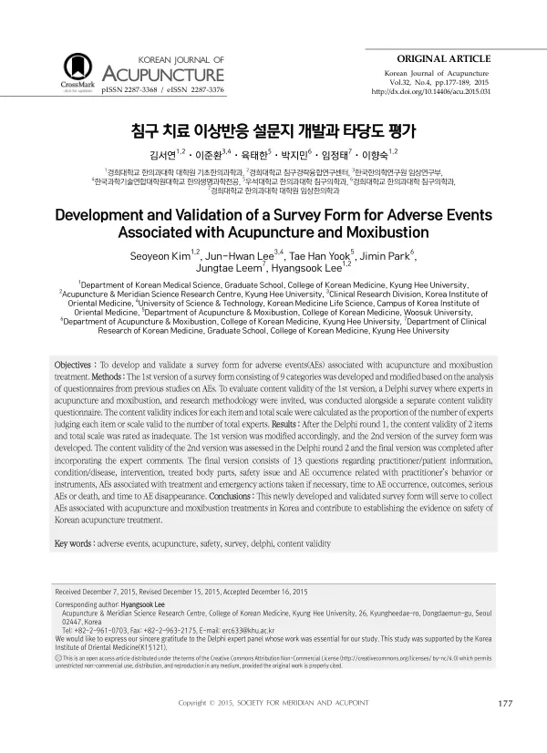

Development and Validation of a Survey Form for Adverse Events Associated with Acupuncture and Moxibustion
Kim S, Lee JH, Yook TH, Park J, Leem J, Lee H
Korean Journal of Acupuncture 32(4):177-189

첫 장 · 오픈액세스First page · open access
논문 소개Summary
침구 치료의 이상반응을 모을 표준 설문지를 만들고 타당도를 확인한 연구입니다. 선행 연구들의 설문을 분석해 9개 범주로 1차본을 만든 뒤, 침구와 연구방법론 전문가를 대상으로 델파이 조사와 별도의 내용타당도 조사를 함께 돌렸습니다. 1차 델파이에서 2개 문항과 전체 척도의 타당도가 부족하다고 나와 고쳤고, 2차 델파이를 거쳐 최종본을 확정했습니다. 최종본은 13개 문항으로 시술자와 환자 정보, 질환, 중재, 시술 부위, 시술자나 기구와 관련된 안전 문제, 이상반응과 응급조치, 발생 시점, 결과, 중대한 이상반응이나 사망, 소실 시점을 담았습니다.
A survey form for collecting adverse events associated with acupuncture and moxibustion was developed and validated. A first version of nine categories was drafted from an analysis of questionnaires used in previous adverse event studies, then put to a Delphi survey of experts in acupuncture and moxibustion and in research methodology alongside a separate content validity questionnaire. After round one, two items and the total scale were judged inadequate and revised; a second round settled the final version. It comprises 13 questions covering practitioner and patient information, condition, intervention, treated body parts, safety issues relating to the practitioner or instruments, adverse events and any emergency action taken, time to onset, outcome, serious events or death, and time to resolution.
인용Cite
Kim S, Lee JH, Yook TH, Park J, Leem J, Lee H. Development and Validation of a Survey Form for Adverse Events Associated with Acupuncture and Moxibustion. Korean Journal of Acupuncture. 2015;32(4):177-189. doi:10.14406/acu.2015.031